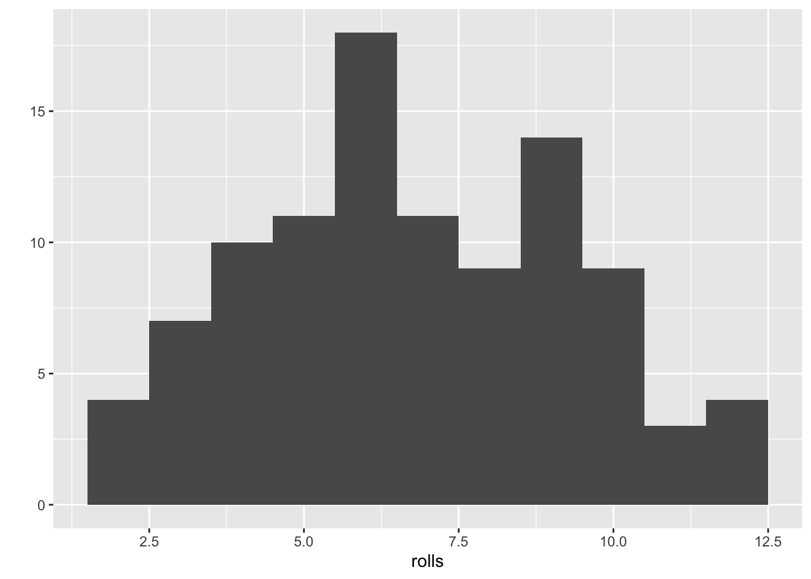
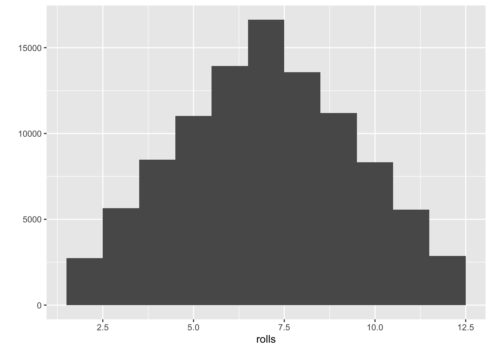

install.packages('ggplot2')4 Packages and more dice
We now have code that allows us to roll two dice and add the results together. To keep things interesting, let’s aim to weight the dice so that we can fool our friends into thinking we are lucky.
First, though, we should prove to ourselves that our dice are fair. We can investigate the behavior of our dice using two powerful and general tools;
- Simulation (or repetition or repeated sampling)
- Visualization
For the repetition part of things, we will use a built-in R function, replicate. For visualization, we are going to use a convenient plotting function, qplot. However, qplot does not come built into R. We must install a package to gain access to it.
4.1 Packages
R is a powerful language for data science and programming, allowing beginners and experts alike to manipulate, analyze, and visualize data effectively. One of the most appealing features of R is its extensive library of packages, which are essential tools for expanding its capabilities and streamlining the coding process.
An R package is a collection of reusable functions, datasets, and compiled code created by other users and developers to extend the functionality of the base R language. These packages cover a wide range of applications, such as data manipulation, statistical analysis, machine learning, and data visualization. By utilizing existing R packages, you can leverage the expertise of others and save time by avoiding the need to create custom functions from scratch.
Using others’ R packages is incredibly beneficial as it allows you to take advantage of the collective knowledge of the R community. Developers often create packages to address specific challenges, optimize performance, or implement popular algorithms or methodologies. By incorporating these packages into your projects, you can enhance your productivity, reduce development time, and ensure that you are using well-tested and reliable code.
4.1.1 install.packages
To install an R package, you can use the install.packages() function in the R console or script. For example, to install the popular data manipulation package “dplyr,” simply type install.packages(“dplyr”). This command will download the package from the Comprehensive R Archive Network (CRAN) and install it on your local machine. Keep in mind that you only need to install a package once, unless you want to update it to a newer version.
In our case, we want to install the ggplot2 package.
4.1.2 library
After installing an R package, you will need to load it into your R session before using its functions. To load a package, use the library() function followed by the package name, such as library(dplyr). Loading a package makes its functions and datasets available for use in your current R session. Note that you need to load a package every time you start a new R session.
library(ggplot2)Now, the functionality of the ggplot2 package is available in our R session.
Installing vs loading packages
The main thing to remember is that you only need to install a package once, but you need to load it with library each time you wish to use it in a new R session. R will unload all of its packages each time you close RStudio.
4.1.3 Finding R packages
Finding useful R packages can be done in several ways. First, browsing CRAN (https://cran.r-project.org/) and Bioconductor (more later, https://bioconductor.org) are an excellent starting points, as they host thousands of packages categorized by topic. Additionally, online forums like Stack Overflow and R-bloggers can provide valuable recommendations based on user experiences. Social media platforms such as Twitter, where developers and data scientists often share new packages and updates, can also be a helpful resource. Finally, don’t forget to ask your colleagues or fellow R users for their favorite packages, as they may have insights on which ones best suit your specific needs.
4.2 Are our dice fair?
Well, let’s review our code.
roll2 <- function(bones = 1:6) {
dice = sample(bones, size = 2, replace = TRUE)
sum(dice)
}If our dice are fair, then each number should show up equally. What does the sum look like with our two dice?
Read the help page for replicate (i.e., help("replicate")). In short, it suggests that we can repeat our dice rolling as many times as we like and replicate will return a vector of the sums for each roll.
rolls = replicate(n = 100, roll2())What does rolls look like?
head(rolls)[1] 5 8 10 6 7 5length(rolls)[1] 100mean(rolls)[1] 6.89summary(rolls) Min. 1st Qu. Median Mean 3rd Qu. Max.
2.00 5.00 7.00 6.89 8.25 12.00 This looks like it roughly agrees with our sketched out ideal histogram in Figure 4.1. However, now that we’ve loaded the qplot function from the ggplot2 package, we can make a histogram of the data themselves.
qplot(rolls, binwidth=1)Warning: `qplot()` was deprecated in ggplot2 3.4.0.
How does your histogram look (and yours will be different from mine since we are sampling random values)? Is it what you expect?
What happens to our histogram as we increase the number of replicates?
rolls = replicate(n = 100000, roll2())
qplot(rolls, binwidth=1)
4.3 Bonus exercise
How would you change the roll2 function to weight the dice?